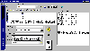

|
|
| 当前位置：电脑报电子版 > 1999 年 > 45 期 > 软件世界 > 超级图像格式转换工具——Konvertor |
| 《 超级图像格式转换工具——Konvertor 》 |
| Konvertor是一个多功能的图像格式转换工具，该工具有非常广泛的图像格式转换功能，支持转换的图像格式多达105种，涵盖了DOS、Windows、OS/2、Unix、Mac、Linux等系统中使用到的各种图像格式，并且还可以转换多种音频和视频格式文件以及批量转换文件，可以说Konvertor是一个超级图像格式转换工具。 下面列出了该软件可以转换的常用文件格式： 3种文本格式 标准文本格式、Unix格式、Macintosh格式。 4种视频格式 AVI动画格式、MPEG1、MPEG2等压缩影像格式。 25种音频格式 主要有CD音轨、MP3、WAV、MIDI、VOC等。 105种图像格式 主要有BMP、DIB、DCX、ICO、IMG、JPG、GIF、MAC、 PCD、PDF、PS、PS2、PSD、TIF、VGA、XBM等。 一、下载和安装 Konvertor可以从它的开发者主页http:∥prowanadoofr/chass下载，国内下载地址为http:∥wwwnewhuacomcn/down/konvertorezip，下载文件大小为33MB。该软件的安装也非常简单，将下载文件解压后，运行其中的Install文件，然后设置好安装目录即可。 二、界面认识 Konvertor的界面虽说并不复杂，但项目还是比较多的。主要的工作区域有两个：一个是选择要转换的文件，在窗口的左上部，选择好的文件就列出在右面窗口中。一个是设置转换成的文件格式以及保存地址，在窗口的左下部。三、选择文件 先在“搜寻”栏中选择要转换文件所在的目录，然后在“文件类型”下拉列表框中选择所要转换文件的类型，如JPG。由于类型比较多，因此查找类型就比较麻烦，建议直接在下拉列表框的后面选择“All image files”（所有图像文件）项，这样在上面的文件列表窗口中就列出了该目录下的所有图像文件。也可以选择“All sound files”（所有声音文件）项列出所有的声音文件。用鼠标选择文件列表窗口中要转换的文件，也可以按住“Shift”或“Ctrl”键选择多个要转换的文件，选择的文件名称就列在“文件名”文本框中，按回车就可以将这些选择的文件列在界面右面的转换文件列表栏中。通过这种方法，可以在不同目录中选择多个文件，实现文件的批量转换。不过要注意的是，选择的文件类型要相似，不能一些是声音文件，一些是图像文件。 另外，可以选择文件列表框中的上部工具栏中的第4个按钮打开图像或声音文件，点击第6个按钮是选择文件列表窗口中所有的文件，点击第7个按钮，可以取消所有的选择。 四、转换设置 要转换的文件选择好之后，就可以设置将它们转换成什么格式的文件。主要的设置都在界面左下部的“Converted file”框中进行，先在“Type”（格式）栏中选择要转换成的文件类型，如GIF图像格式，然后在“Target folder”栏中设置转换后的图片保存的文件夹，选择该栏旁边的按钮可以打开文件夹选择窗口。最后，设置转换成的文件格式的参数属性，选择好文件的转换格式之后，点击界面第二排工具栏中的第8个工具按钮，即可弹出转换格式的参数设置窗口（也有些转换格式没有设置参数，则该按钮为灰色），由于不同的文件格式有不同的参数属性，因此，不同的文件格式也有不同的参数设置窗口。很多格式的参数设置都可以按照默认设置，但有些文件格式还是要注意根据自己的需要调整转换格式的参数。如图2就是GIF和JPG图像格式的参数设置窗口。所有的项目都设置好后，点击界面中的转换按钮（如图1），程序即开始转换。 五、一些重要格式的转换 Konvertor可以将声音、图像等文件进行格式转换，例如可以将AVI影像转换成MPEG电影压缩格式，不过在设置MPEG压缩格式参数的时候，要注意在“Standard Video”栏中选择制式（默认的是NTSC美国制式）。MP3，使用Konvertor，可以将多种音乐格式文件转换成MP3格式的压缩音乐，但不能直接将CD音乐压缩成MP3音乐，但仍然能够满足我们很多情况下的需要。 PDF，是一种网上流行的文件格式，PDF格式文件需要专门的制作生成工具，在Konvertor中，可以将图片或者TXT文本转换成PDF格式文件，转换的时候，注意设置PDF文件的页面大小。 TXT，可以将TXT文件转换成图像文件（在“文件类型”栏中选择“TXT－text files→image”），也可以将TXT文件转换成其他格式的文本文件（在“文件类型”栏中选择“TXT－text files→text”）。 LINUX中的图像文件，可以将Windows中使用的图像文件转换成专门在LINUX系统中使用的图像文件，如XBM、XPM、XWD等，转换方法也没有什么特别。 (四川 祝融) |
| 下载本期推荐软件 | 页 首 |
| 《电脑报》版权所有，电脑报网站编辑部设计制作发布 |